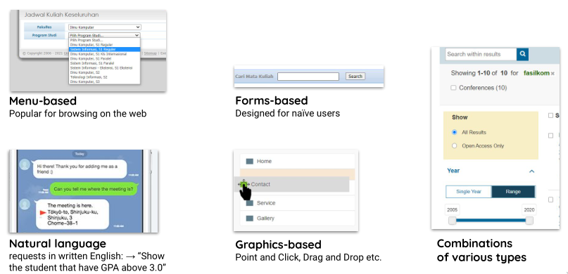
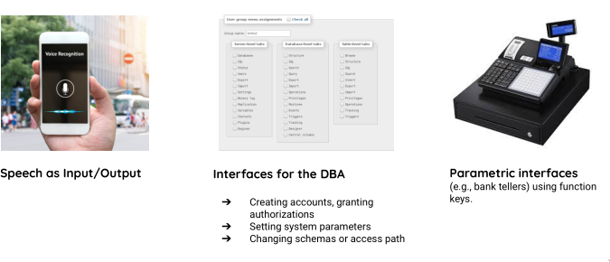
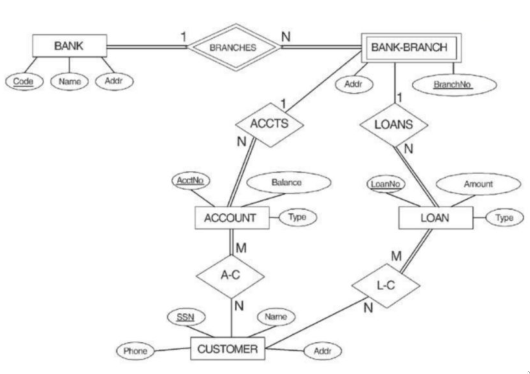
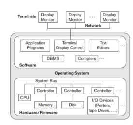
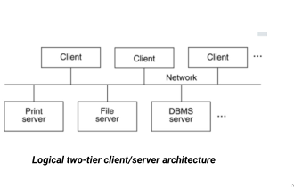
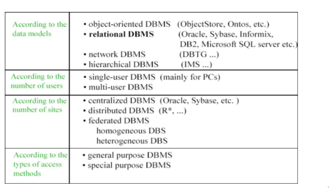

DBMS
Database Management System (DBMS)
DBMS is a collection of programs designed to define, manipulate, retrieve, and manage data in a #Database. With it a user can create, and maintain a database as the users wishes.
A DBMS would often time used a schema that can be used as a framework to descibe it’s structure, one of such framework would be Three Schema Architecture#.
How it Works
- Application program accessed the database by sending commands or queries
- The DBMS Software processed the query
- The Software then accessed the Meta-Data and the Stored Database
- Meta-Data is the description of data about a particular data
- Data is the actual data, with words, facts, measurements, etc
Actors on the Scene
When interacting with the database there are several actors in play
Database Administrators (DBA)
They are responsible for the following:
- Authorizing access to the database
- Coordinate and monitor the usage of a database
- Acquiring software and hardware resources
Database Designers
They are responsible for the following:
- Identify the data to be stored
- Choosing appropriate structures to represent and store the database
End users
People whose jobs require access to the database.
- Naive or parametric end users
- Casual end users
- Sophisticated end users
- Standalone users
- Etc
System Analysts
Determine the requirements of end users.
Application Programmers
Implement the specifications as programs
Workers Behind the Scene
DBMS System Designers and Implement
Design and implement the DMBS modules and interfaces as a software package
Tools Developers
Design and implement the tools
Operators and maintance personels
responsible for running and maintance of hardware and software environment for database system
When We Need to Use Database
- The data is ‘business’ data: large in number, and needed to updated
- Consist of a lot similar data (homogeneous)
- The data is relevant for a long time
- Simultaneous usage by user
When We don’t Need to Use Database
- Simple, well-defined database application not expected to change at all
- Stringent, real-time requirements that may not be met because of DBMS overhead
- Embedded systems with limited storage capacity
- No multiple-user access to data
When Databases Cannot be Used
- If the dabase system can’t handle the complexity of data because of the limitation of requirements modelling
- If users need special operation which can not be met by the DBMS
DBMS Component
DBMS Languages
Data Definition Language (DDL)
Used by the DBA and database designers to specify the conceptual schema and internal schema of a database and any mapping between the two
In many DBMS where a clear seperation of conceptual and internal schema, DDL is used to define conceptual schema only. Storage Definition Language (SDL) define the internal schema whilst View Definition Language (VDL) are used to define user view and their mapping to the conceptual schemas
Most DBMS used DDL to define both the conceptual and external schemas
Data Manipulation Language (DML)
Used to specify retrieval and updates of a database
IDML commands (data sublanguage) can be embedded in a general-purpose programming language (host language), such as COBOL, C or an Assembly Language.
Alternatively, stand-alone DML commands can be applied directly (query language). ➔
High Level or Non-procedural Languages
Set-oriented or declarative languages which emphasizes on what data to retrieve rather than how like e.g., SQL
Low legel or Procedural Languages
Record-at-a-time languages thath emphasizes on how to retrieve a data and must be embedded in programming language
DBMS Interfaces
 
The Database System Environment

Component Modules of a DBMS and Their Interactions
for explanation look at this video
Database System Utilites
Utility that perform actions such as: ➔
- Loading data stored in files into a database. Includes data conversion tools.
- Backing up the database periodically on tape.
- Reorganizing database file structures.
- Report generation utilities.
- Performance monitoring utilities.
- Other functions, such as sorting, user monitoring, data compression, etc.
Other Tools
Data Dictionary/Repository
Used to store schema descriptions and other information such as design decisions, application program descriptions, user information, user standards, etc
Basically a place to dump all information
Application Developmen Environment and CASE (Computer-Aided Software Engineering) Tools
- Power builder, Builder, VB, Java, C, C++, etc.
- Ms.Visio, ER-Win, DBDesigner, etc
DBMS Architecture
Centralized Architecture
combines everything into single system (PC) including DBMS software, hardware, application programs and user interface processing software
Basically solo

Client-Server Architecture
Servers
Specialized Servers with Specialized functions. Ex. Database Server, File Server, Web Server, Email Server
Client
Provide appropriate interfaces and a client-version of the system to access and utilize the server resources. ➔
- Clients maybe diskless machines or PCs or Workstations with disks with only the client software installed. ➔
- Connected to the servers via some form of a network (LAN: local area network, wireless
Two Tier Client-Server Architecture
User Interface Programs and Application Programs on the client side. You touch the fancy buttons while other pc do the boring stuff

Three Tier Client-Server Architecture
A common thing for Web applications. The only difference is that there’s an intermidiate layer called applications server or web server
Purpose
Stores the web connectivity software and the rules and business logic (constraints) part of the application used to access the right amount of data from the database server ➔
Acts like a conduit for sending partially processed data between the database server and the client
Provides an additional feature known as security as it can encrypt the data at the server before transmission as well as decrypt data at the client as well
Classification
